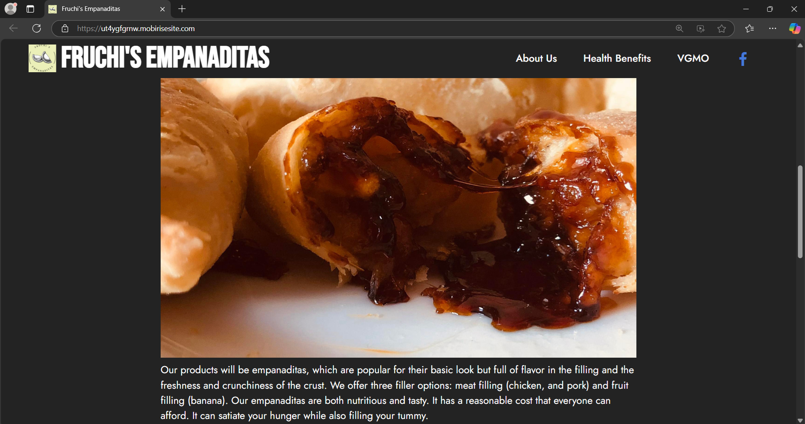
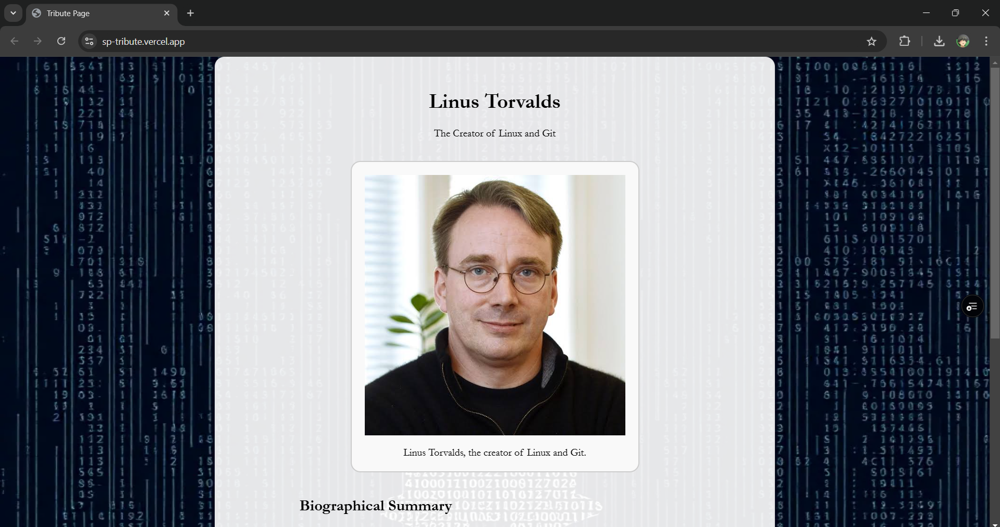
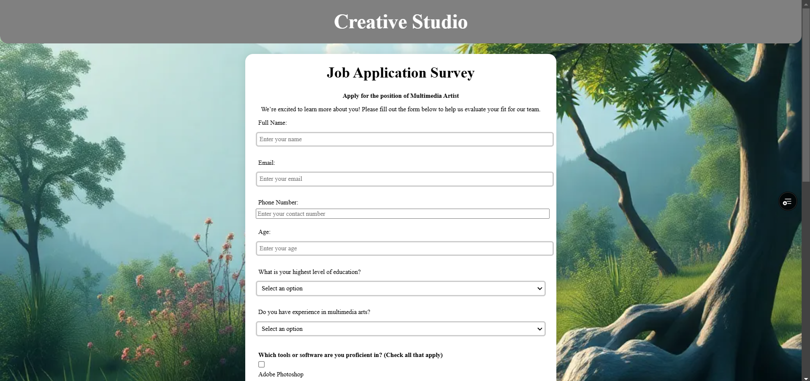
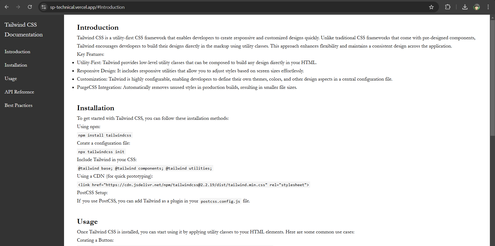

Developed an e-commerce website using Mobirise during Senior High School to showcase and sell homemade Empanaditas. The project featured product listings, pricing information, and contact details for ordering.

Created a responsive tribute page for Linus Torvalds using HTML and CSS in Visual Studio Code. The project showcases the life and contributions of the Linux creator, and was deployed live using Vercel's hosting platform.

Developed a Job Application Survey Form for Multi-Media Artists using HTML and CSS in Visual Studio Code. The form includes various input fields for applicant information and was deployed live using Vercel's hosting platform.

Created a comprehensive Technical Documentation page about Tailwind CSS using HTML and CSS in Visual Studio Code. The documentation provides detailed information about Tailwind's utility-first approach and was deployed live using Vercel's hosting platform.